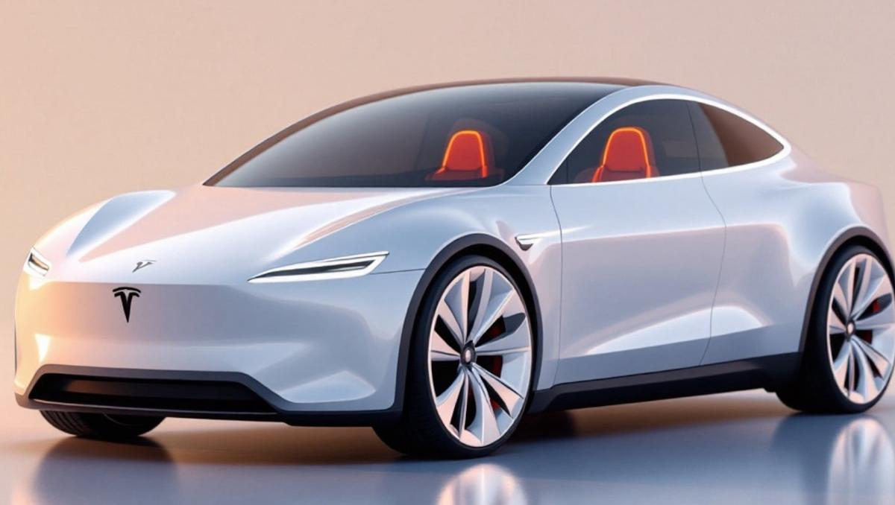
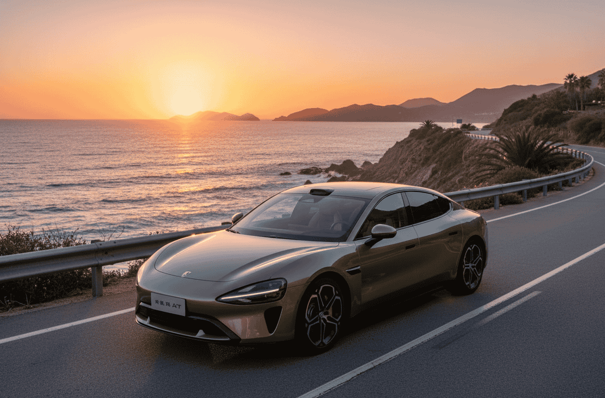
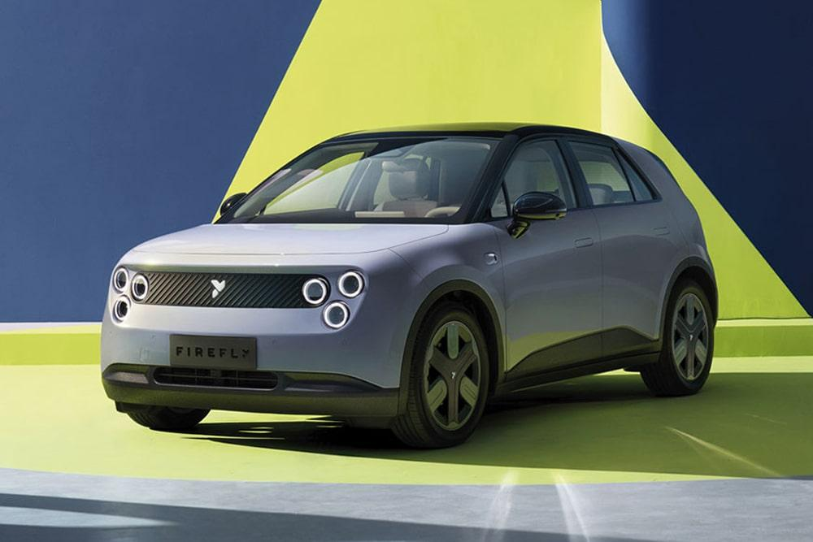

Llevamos años escuchando que el coche eléctrico es el futuro. Pero 2027 podría ser el año en que ese futuro deje de ser promesa para convertirse en realidad de mercado masivo. Los fabricantes —tanto europeos como chinos— están preparando una hornada de modelos que apuntan directamente al comprador medio: precios por debajo de 25.000 euros, autonomías superiores a 400 km y tecnologías que hasta hace poco solo se veían en segmentos premium.
Repaso modelo a modelo todo lo que se sabe hasta ahora, con fuentes oficiales donde las hay y sin especular donde los datos aún no están confirmados.
1. Volkswagen ID.2: el eléctrico de gran volumen que Volkswagen necesita
Volkswagen ID.2 — Datos clave
- Precio objetivo: desde ~25.000 €
- Autonomía estimada: superior a 400 km (WLTP)
- Plataforma: MEB Entry
- Llegada prevista: 2025-2026 (producción), comercialización a partir de 2026
- Fuente: Volkswagen Newsroom — ID.2all concept
El Volkswagen ID.2 es probablemente el proyecto más estratégico del grupo VAG para los próximos años. Con el concept ID.2all presentado en 2023, Volkswagen dejó claro su objetivo: un eléctrico del segmento B con precio de acceso cercano a los 25.000 euros, algo que ningún modelo de la marca ha conseguido hasta ahora en versión eléctrica.
La plataforma MEB Entry está diseñada específicamente para reducir costes de fabricación sin sacrificar prestaciones. Según la información oficial publicada por Volkswagen, el ID.2all tendría una autonomía estimada de más de 450 km en ciclo WLTP y tracción delantera, lo que lo acercaría más al perfil de comprador generalista que al entusiasta.
Aunque la producción se estaba planificando para arrancar en 2025-2026, los plazos definitivos de comercialización en España aún no están cerrados. Todo apunta a que 2026-2027 será la ventana real de llegada al mercado europeo.
💡 Por qué importa para el mercado español
El ID.2 compite directamente con el segmento del Volkswagen Polo en gasolina. Si logra acercarse a ese precio, podría ser el primer eléctrico de Volkswagen que se dirija a un público masivo en España, no solo a early adopters.
2. Cupra Raval: eléctrico made in Spain

El Cupra Raval comparte plataforma con el ID.2 y se fabricará en la planta de Martorell
Cupra Raval — Datos clave
- Precio estimado: desde ~25.000 €
- Autonomía estimada: hasta 440 km (WLTP)
- Plataforma: MEB Entry (compartida con el ID.2)
- Producción: Martorell (Barcelona)
- Llegada prevista: 2025-2026
- Fuente: Cupra Official — Raval
El Cupra Raval tiene un plus que lo diferencia del ID.2: se fabricará en España, concretamente en la planta de Martorell. Para el mercado nacional eso es relevante tanto a nivel industrial como comercial. Cupra presentó el concept car en 2023 y desde entonces ha ido confirmando detalles técnicos de forma progresiva.
Con plataforma MEB Entry compartida con el ID.2, el Raval apunta a un perfil más dinámico y urbano, coherente con el posicionamiento de la marca. La autonomía estimada en torno a 440 km WLTP lo sitúa en un nivel competitivo muy interesante para su rango de precio.
Su llegada al mercado podría adelantarse incluso a 2025 en algunos mercados europeos, aunque la disponibilidad amplia en España se espera a lo largo de 2026.
3. Renault Twingo E-Tech: la revolución urbana por menos de 20.000 euros

El nuevo Renault Twingo E-Tech apunta a convertirse en el eléctrico urbano más accesible del mercado europeo
Renault Twingo E-Tech — Datos clave
- Precio objetivo: inferior a 20.000 €
- Segmento: urbano (A/B)
- Producción: Europa (pendiente de confirmar planta definitiva)
- Llegada prevista: en torno a 2026-2027
- Fuente: Renault Group — Twingo Legend Concept
Renault lleva meses trabajando en la resurrección del Twingo como eléctrico. El grupo francés presentó el concept Twingo Legend en 2023 como guiño retro al original de los años 90, aunque el modelo de producción tendrá un diseño diferente y orientado al mercado actual.
El objetivo de precio —por debajo de 20.000 euros— es el más ambicioso de todos los lanzamientos previstos y, si se cumple, podría suponer un punto de inflexión real para la adopción masiva del eléctrico en Europa. Renault ya demostró con el R5 E-Tech que sabe cómo hacer eléctricos asequibles con buenas prestaciones.
⚠️ Dato con reservas
El precio por debajo de 20.000 € es un objetivo declarado por Renault, no un precio de venta confirmado. La cifra definitiva dependerá de los costes de producción y la evolución del mercado de baterías. Habrá que esperar a la presentación oficial del modelo de serie para tener datos concretos.
4. Tesla Model 2: el gran interrogante americano

Tesla trabaja en una plataforma de menor coste, aunque los detalles definitivos del formato aún no están confirmados
Tesla — Nuevo modelo asequible — Datos clave
- Precio estimado: por debajo del Model 3 actual (~30.000 € en Europa)
- Plataforma: nueva generación de bajo coste (next-gen platform)
- Estado actual: en desarrollo; formato final no confirmado oficialmente
- Llegada prevista: incierta; Tesla apuntó a 2025, pero los plazos se han movido
- Fuente: Tesla Investor Relations
Tesla lleva tiempo anunciando que trabaja en una nueva plataforma de coste reducido que permita lanzar un vehículo más asequible que el Model 3. Lo que no está claro —y aquí hay que ser honestos— es cuándo llegará exactamente ni qué formato tendrá.
En la presentación de resultados del primer trimestre de 2024, Tesla confirmó que ese nuevo vehículo de bajo coste seguía en desarrollo, aunque descartó que fuera un modelo de 25.000 dólares en el sentido tradicional. En cambio, apuntó a un modelo que aprovecharía la misma línea de producción que los Model 3 y Model Y actuales para reducir costes de fabricación.
Para Europa, el modelo clave sigue siendo la reducción del precio de acceso a la marca. Si Tesla consigue situar un vehículo por debajo de los 30.000 euros con autonomía competitiva, el impacto en el mercado sería considerable. Pero de momento, todo apunta a que cualquier novedad en este sentido no llegará antes de 2026-2027.
5. Xiaomi YU7: la expansión internacional de la tecnológica china

El Xiaomi SU7 fue el primer paso de la marca tecnológica en el sector del automóvil eléctrico; el YU7 SUV es el siguiente
Xiaomi YU7 — Datos clave
- Tipo: SUV eléctrico
- Mercado actual: China (lanzamiento en 2025)
- Autonomía anunciada: hasta 760 km (CLTC, ciclo chino)
- Posible llegada a Europa: pendiente de confirmar
- Fuente: Xiaomi EV oficial
Tras el sorprendente éxito del SU7 en China —Xiaomi vendió más de 100.000 unidades en sus primeros meses de comercialización—, la marca está preparando el YU7, un SUV eléctrico que se presentó oficialmente en mayo de 2025 para el mercado chino.
Las cifras anunciadas por Xiaomi son llamativas: hasta 760 km de autonomía en ciclo CLTC (el ciclo de homologación chino, habitualmente más optimista que el europeo WLTP), motor trasero o tracción total, y una pantalla central de grandes dimensiones integrada con el ecosistema de productos Xiaomi.
La gran pregunta es si —y cuándo— llegaría a Europa. Xiaomi no ha confirmado planes de expansión europea para el YU7 en el corto plazo, aunque el interés comercial de la marca en este mercado es evidente. Los aranceles europeos a los vehículos chinos complican ese escenario y lo hacen más incierto.
6. BYD Sealion 07 y la continua expansión de BYD en Europa
El BYD Sealion 07 es uno de los modelos más recientes del fabricante chino en su expansión por el mercado europeo
BYD Sealion 07 — Datos clave
- Tipo: SUV eléctrico de segmento D
- Autonomía: hasta 482 km (WLTP, versión AWD)
- Batería: tecnología Blade de BYD
- Carga rápida: hasta 150 kW (DC)
- Precio en Europa: desde ~42.990 € en algunos mercados europeos
- Disponibilidad en España: en proceso de expansión comercial
- Fuente: BYD Europe
BYD no para. El fabricante chino lleva años ampliando sistemáticamente su presencia en Europa y cada temporada incorpora nuevos modelos a su catálogo europeo. El Sealion 07 es uno de los más recientes en llegar al mercado europeo: un SUV eléctrico de tamaño generoso con la tecnología de batería Blade que la marca lleva años perfeccionando.
Lo que diferencia a BYD del resto de fabricantes chinos es que ya tiene una presencia comercial real y consolidada en España, con red de concesionarios y servicio posventa. Eso le da una ventaja frente a competidores como Xiaomi o NIO, que aún están en fases más tempranas de implantación.
Para 2026-2027, BYD tiene previsto seguir ampliando su gama en Europa, con modelos en segmentos que van desde el utilitario hasta el SUV grande. La marca también está explorando opciones de producción en Europa para evitar los aranceles europeos sobre vehículos fabricados en China.
📊 BYD en cifras europeas
BYD vendió más de 83.000 vehículos eléctricos de pasajeros en Europa en 2024, según datos del sector. Una cifra que sigue creciendo y que convierte a la marca en uno de los actores que más presión están ejerciendo sobre los fabricantes tradicionales europeos.
7. NIO Firefly: eléctrico asequible con intercambio de batería

El NIO Firefly es la apuesta de la marca china por el segmento más asequible, con su exclusiva tecnología de intercambio de batería
NIO Firefly — Datos clave
- Tipo: turismo compacto eléctrico (segmento B)
- Tecnología destacada: intercambio de batería (Battery Swap)
- Precio estimado en Europa: en torno a 20.000-25.000 € (pendiente de confirmar)
- Presentación: enero de 2025 en el CES de Las Vegas
- Lanzamiento en China: primer semestre de 2025
- Llegada a Europa: pendiente de confirmar calendario oficial
- Fuente: NIO Firefly oficial
NIO presentó el Firefly en el CES de Las Vegas en enero de 2025 como su apuesta por el segmento más accesible. La marca, conocida hasta ahora por sus SUV premium, quiere llegar a un público más amplio con este compacto urbano que mantiene una de sus señas de identidad: la tecnología de intercambio de batería.
El sistema Battery Swap de NIO permite cambiar la batería agotada por una completamente cargada en una estación especializada en menos de cinco minutos, una alternativa interesante a la carga convencional para usuarios con prisas o sin posibilidad de cargar en casa.
NIO ya tiene presencia en varios mercados europeos —Noruega, Alemania, Países Bajos, Dinamarca y Suecia— aunque en España su implantación todavía está en una fase incipiente. El Firefly podría ser el modelo que acelere esa expansión si los precios son competitivos, aunque las fechas definitivas para España aún no están confirmadas.
Una tendencia clara: más modelos, mejores baterías, precios más bajos
Si algo tienen en común casi todos los modelos de esta lista es que apuntan a democratizar el acceso al coche eléctrico. Durante años, el eléctrico fue sinónimo de segmento premium. Eso está cambiando de forma acelerada.
✅ Las cinco tendencias que marcarán 2027
- Precios más accesibles: varios modelos apuntan a estar por debajo de los 25.000 €, algunos incluso por debajo de 20.000 €.
- Baterías más eficientes: mayor densidad energética, menos peso y menor coste de fabricación gracias a la evolución de la química de las celdas.
- Mayor velocidad de carga: la carga a 150 kW o superior empieza a ser estándar incluso en segmentos medios.
- Más producción en Europa: tanto por aranceles como por cercanía al cliente, los fabricantes buscan producir más en el continente.
- Competencia china que ya no es opcional: BYD, NIO, Xiaomi y otros están cambiando las reglas del mercado y obligando a los fabricantes europeos a acelerar sus planes.
Conclusión: 2027 podría ser el año del cambio real
Durante años el coche eléctrico estuvo dominado por unos pocos modelos de gama alta pensados para un comprador muy concreto. En 2027 esa realidad será muy diferente. El mercado se va a llenar de opciones en el segmento de precio donde se concentra la mayoría de las compras de vehículo en España: entre 20.000 y 30.000 euros.
No todos los modelos de esta lista llegarán a tiempo ni cumplirán exactamente las expectativas que generan hoy. Eso es la naturaleza del sector del automóvil: los plazos se mueven, los precios cambian y los planes se ajustan. Pero la dirección está clara.
Lo que sí parece seguro es que el comprador español tendrá en 2027 más opciones eléctricas competitivas que nunca, tanto de fabricantes europeos como asiáticos. Y eso, a la larga, es la mejor noticia posible para el consumidor.
Seguiré actualizando esta información conforme los fabricantes confirmen datos definitivos de precio, autonomía y fechas de lanzamiento para el mercado español.